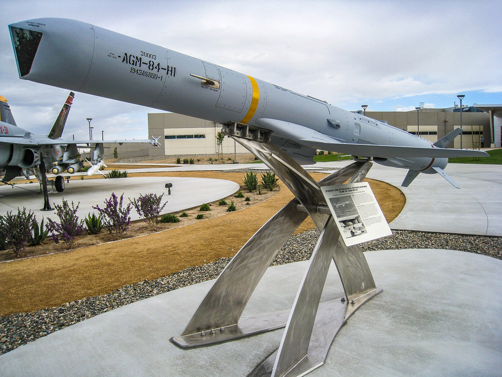

Standoff Weapons
Munitions such as these, typically fall in the missile category. For our interest they can be further divided
into:
-
Cruise
Goes a little bit closer but typically more precise. This baby is typically launched from either a ship or an
airplane,
a mobile platform, so to speak. Pictured above is a great example of such human creation, SLAM-ER.
-
Ballistic
Goes further, but may be less precise. These are typically launched by not-so-mobile platforms, meaning that we
cannot
physically get as close to adversary as we would like (as we would with the SLAM-ER). SCUDs and Tochka-Us which we are in posession of, unfortunately
not only not yield best results, as
Saddam's little adventure with Israel has
shown, but also create a lot of unnecessary collateral damage. With Saddam back in the early 90s, it
produced a hell a lot of bang, but not much buck was made for it.